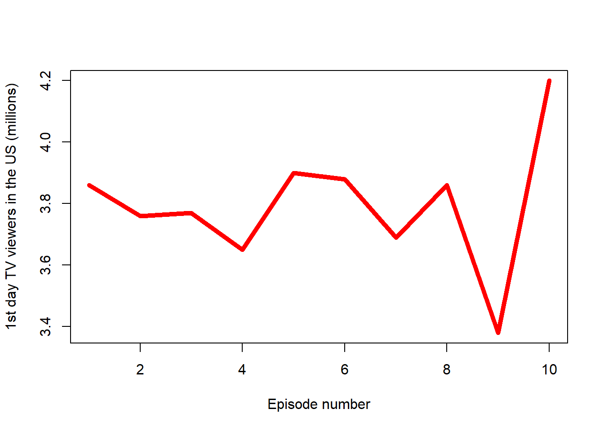

```{r}
load(paste0("C:\\Users\\le444831\\Desktop\\RRcourse2023\\Data\\season_", params$season, ".RData"))
```1 Game Of Thrones
```{r}
avg_viewership <- mean(season_data$viewers)
nameofseason <- season_data$title[season_data$viewers == max(season_data$viewers)]
descriptionofseason <- season_data$description[season_data$viewers == max(season_data$viewers)]
cat("The most popular episode of the season was", nameofseason, "in which:", "\n", "\n", descriptionofseason)
```The most popular episode of the season was "Valar Morghulis" in which:
Joffrey sets Sansa aside to marry Margaery Tyrell and ally with the Tyrell family. Tyrion fears for his and Shae's safety after Tywin is named Hand of the King. Melisandre gives Stannis a new hope. Brienne kills Stark soldiers after they recognize Jaime. Catelyn fails to dissuade Robb from marrying Talisa, breaking his promise to wed Walder Frey's daughter. In Qarth, inside the House of the Undying, Daenerys enters a simulacrum of a destroyed Iron Throne room, then is reunited with what appears to be Khal Drogo and their infant son. Knowing it is unreal, she leaves and successfully retrieves her dragons, who fatally burn Pree, who tries to imprison her. She seals Daxos and her traitorous servant inside his empty vault and claims his other possessions, with which Jorah will pay for a small ship. In Winterfell, Theon wants his men to fight Robb's army, but they knock him unconscious and leave; Winterfell is torched. Fatally wounded Maester Luwin convinces Osha to escape with Brandon and Rickon to the Wall for Jon's protection. After Arya, Hot Pie, and Gendry escape Harrenhal, H'ghar gives Arya a non-monetary coin he says can be used to find him in Braavos. Before her, he magically changes his face. North of the Wall, Halfhand forces Jon to kill him to prove his loyalty to the Wildlings. An army of White Walkers and dead men surrounds the Fist of the First Men; Sam hides, watching in horror as they pass.```{r}
plot(season_data$viewers, type="l", col="red", lwd=5, xlab = "Episode number", ylab = "1st day TV viewers in the US (millions)")
```
```{r}
filtered_data <- subset(season_data, viewers > avg_viewership, select = c(no_season, title, directed_by))
``````{r}
library(knitr)
```Warning: package 'knitr' was built under R version 4.2.3```{r}
kable(filtered_data, caption = "Seasons with Viewership Above Average",
col.names = c("Season", "Title", "Directed By"))
```| Season | Title | Directed By | |
|---|---|---|---|
| 1 | 1 | “The North Remembers” | Alan Taylor |
| 9 | 5 | “The Ghost of Harrenhal” | David Petrarca |
| 11 | 6 | “The Old Gods and the New” | David Nutter |
| 15 | 8 | “The Prince of Winterfell” | Alan Taylor |
| 19 | 10 | “Valar Morghulis” | Alan Taylor |